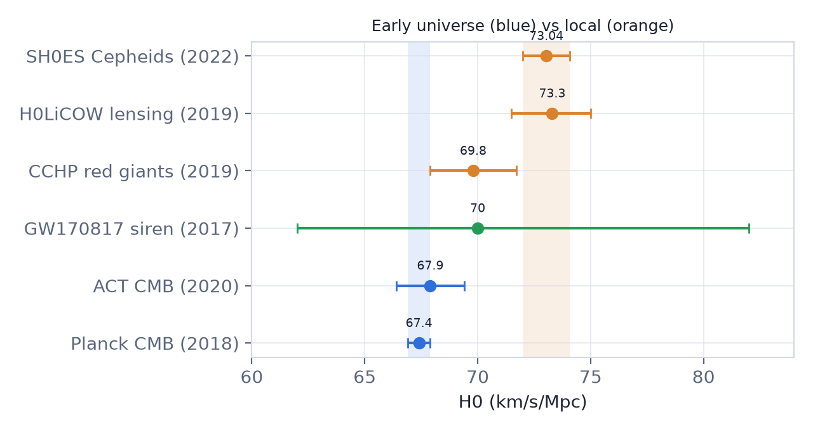
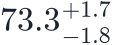
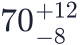
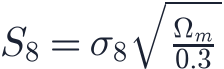
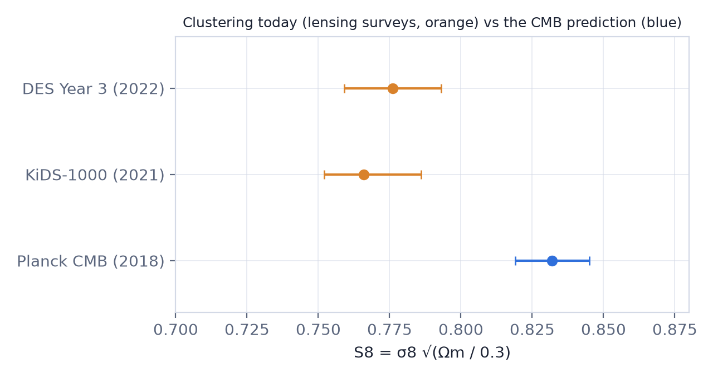

In this lesson you will learn
|
A healthy crisis
ΛCDM (lesson L3.4) fits an enormous range of data with six numbers. But as measurements have become more precise, two quantities no longer agree when measured in different ways. Such tensions are not failures of science; they are exactly how progress happens. Either we find an overlooked error, or we learn something new.
The Hubble tension
There are two fundamentally different ways to find the Hubble constant  .
.
From the early universe (inverse distance ladder)
- The CMB fixes the physical sound horizon from well-understood plasma physics (lesson L5.1).
- The measured angle gives the distance to last scattering.
- Assuming ΛCDM to connect that distance with today's expansion rate gives
BAO combined with Big Bang nucleosynthesis, and the ACT and SPT telescopes, give consistent values around 67–68 without using Planck.
From the local universe (distance ladder)
- Parallax calibrates Cepheid variable stars in the Milky Way (lesson L1.1).
- Cepheids in nearby galaxies calibrate the brightness of Type Ia supernovae.
- Supernovae in the Hubble flow give the expansion rate:

About five sigma The difference between 67.4 ± 0.5 and 73.0 ± 1.0 is about five standard deviations. If both measurements were correct and ΛCDM were right, a difference this large would happen by chance less than once in a million. |
Try it: Supernova Ia Discovery Load the real Pantheon+ sample and fit it yourself: the best fit lands near Ωm = 0.33, ΩΛ = 0.63, and with the Cepheid calibration H₀ comes out at about 73 km/s/Mpc. |
Try it: Supernova Ia Discovery Load the modern-like sample and switch the calibration between Cepheids and CMB + BAO. The same supernovae give two different Hubble constants. |
Independent checks
- Tip of the red giant branch (TRGB): the brightest red giants have a nearly fixed luminosity. The Carnegie–Chicago Hubble Program found in 2019, between the two camps.
- Strong lensing time delays (lesson L5.6): the H0LiCOW collaboration
found

in 2019; this value depends on assumptions about the mass profiles of the lens galaxies. - Standard sirens (lesson L6.5):

from GW170817, still too uncertain to decide. - JWST observations of Cepheids have confirmed that crowding by nearby stars does not explain the SH0ES result, while some JWST-based red giant and carbon star analyses find values closer to 70. The debate continues.
Converting the tension into magnitudes Supernovae measure relative distances very precisely. The whole tension corresponds to a shift of only about 0.15 magnitudes (about 15% in brightness, 7% in distance) in the calibrated brightness of Type Ia supernovae: Cepheid calibration gives about , the CMB + BAO calibration about . |
Possible explanations
1. Unknown systematic errors. Problems in Cepheid photometry, dust, metallicity, or supernova standardisation could shift the local value. Each has been examined in detail; none so far explains the full difference.
2. New physics before recombination. If the sound horizon were about 7–8% smaller, the CMB
would imply a higher  . Proposals include early dark energy (an extra component that
briefly contributes ~10% of the energy near matter–radiation equality), extra relativistic
particles, or interacting neutrinos. These models tend to worsen other fits, such as the S8
tension.
. Proposals include early dark energy (an extra component that
briefly contributes ~10% of the energy near matter–radiation equality), extra relativistic
particles, or interacting neutrinos. These models tend to worsen other fits, such as the S8
tension.
3. New physics at late times. Changing the expansion history after recombination is
strongly constrained by BAO and supernovae, which pin down the shape of  .
.
4. We live in a local void. A large underdensity around us would inflate local expansion, but the required void is far larger than galaxy surveys allow.
The S8 tension
The second tension concerns how clumpy matter is. The standard measure combines the fluctuation amplitude and the matter density (lesson L5.4):

- Extrapolating the CMB fluctuations forward with ΛCDM gives (Planck 2018).
- Weak gravitational lensing surveys (lesson L5.6), which measure today's matter clumping directly, found lower values: KiDS-1000 about 0.77 and DES Year 3 about 0.78.

The difference is about two to three standard deviations, less significant than the Hubble tension. Explanations range from intrinsic alignments of galaxies and baryonic feedback (gas blown out of halos by black holes) to massive neutrinos or dark matter interactions. Some recent analyses with improved modelling find smaller differences, so this tension may be fading.
Try it: Halo Mass Function Explorer Set σ8 to 0.77, the lensing value, and read how many fewer massive clusters it predicts. Cluster counts are a third, independent way to weigh σ8. |
What would it mean?
Keep perspective Neither tension overturns the core of modern cosmology: the expansion, the hot Big Bang, the CMB, nucleosynthesis and structure formation are all confirmed many times over. The question is whether ΛCDM needs a refinement, and if so, what kind. |
Upcoming data will be decisive: more Cepheid, TRGB and JWST distances; hundreds of lensed supernovae and quasars; standard sirens; DESI, Euclid and Rubin Observatory surveys; and next-generation CMB experiments.
Remember this
|